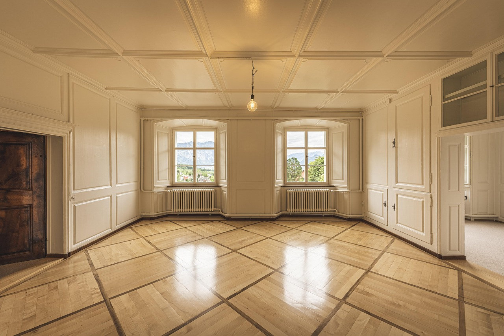
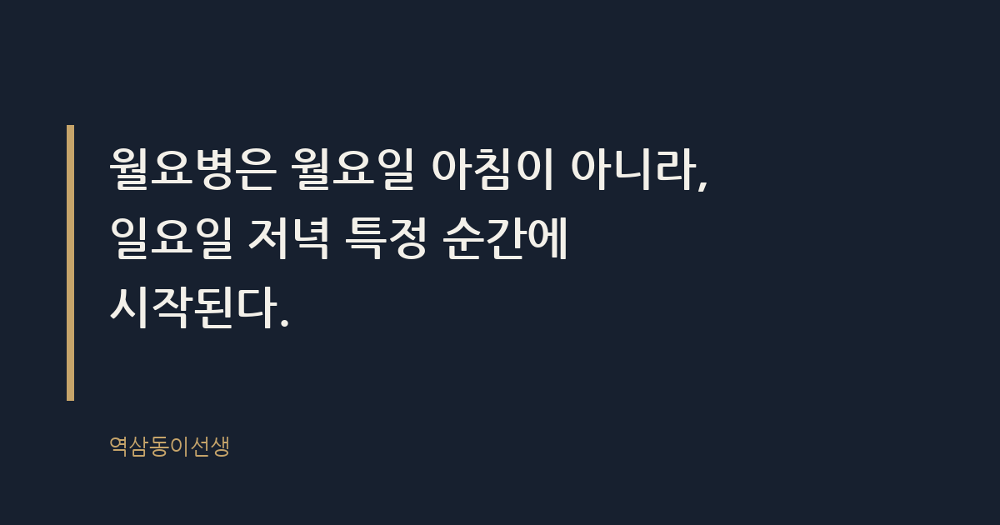
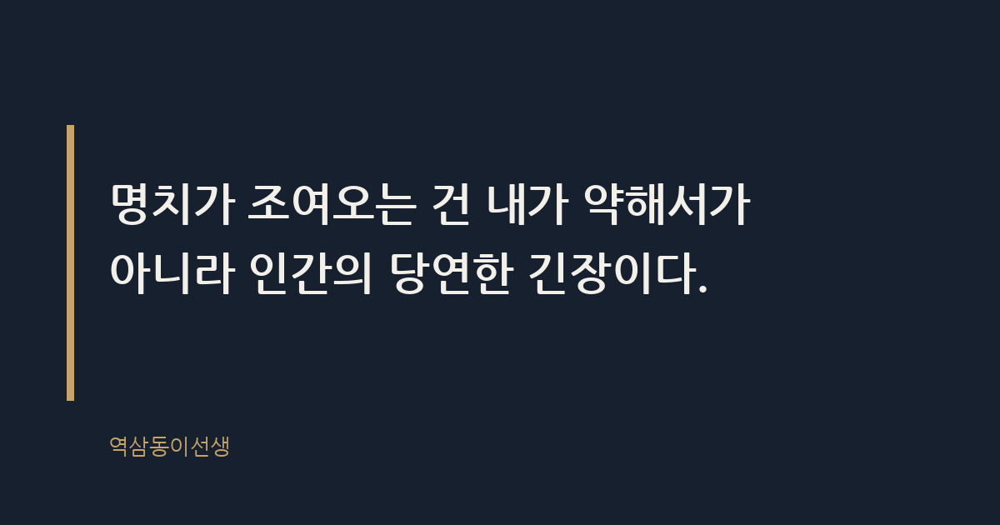

주제 월요병은 일요일 저녁에 시작된다 (evergreen / office)
제목 후보
메타 설명 월요병은 왜 월요일 아침이 아니라 일요일 저녁에 시작될까. 예기불안과 조직 설계 관점에서 그 이유와 작은 습관을 짚어본다.
라벨 월요병, 직장인스트레스, 번아웃, 일요일저녁우울, 워라밸, 월요병극복법, 일요일밤불안이유, 월요병원인분석, 월요병없애는습관, 직장인월요일루틴
실용 자산 없음 (에세이형) — 월요병은 감정과 심리에 공감하러 오는 에세이형 주제라 양식이나 체크리스트를 넣으면 글의 결이 깨진다
발행 전 팩트체크
이미지 (Blogger 편집기에 드래그해 넣으세요)



일요일 저녁 6시 반, 식탁에 앉아 써니 숙제를 봐주다가 무심코 시계를 본다. 순간 명치가 조여온다. 이상한 일이다. 나는 지금 출근할 회사가 없다. 그런데도 몸이 먼저 반응한다. 몇 년 전까지만 해도 이 시간은 주간보고 자료를 마지막으로 점검하던 시간이었다. 회사를 떠난 지 한참인데, 몸의 시계는 아직 거기 멈춰 있다.
월요병은 월요일 아침이 아니라, 일요일 저녁 특정 순간에 시작된다. 이게 이 글의 결론이다. 출근길 지하철에서 느끼는 무기력은 증상의 끝자락일 뿐이고, 진짜 발병은 전날 저녁 어느 순간에 이미 끝나 있다. 그 순간이 언제인지, 왜 거기서 시작되는지를 들여다보면 월요병을 다루는 방식이 완전히 달라진다.
월요병이란 월요일 출근을 앞두고 느끼는 불안, 무기력, 신체 증상을 통칭하는 말이다. 흔히 월요일 아침 알람 소리와 함께 시작된다고 생각하지만, 실제로 직장인들이 호소하는 증상의 발화점을 추적해 보면 대부분 일요일 오후에서 저녁 사이에 몰려 있다. 밥을 먹다가, 드라마를 보다가, 아이 숙제를 봐주다가 갑자기 가슴이 답답해지는 식이다.
심리학에서는 이런 현상을 '일요일 밤 불안'이라는 표현으로 설명하기도 한다. 아직 벌어지지 않은 월요일 업무를 머릿속에서 미리 시뮬레이션하면서 생기는 반응인데, 실제로 많은 직장인이 이 구간에서 처음으로 신체 증상을 느꼈다고 말하는 것으로 알려져 있다. 월요일이 문제가 아니라, 월요일을 상상하는 일요일 저녁이 문제인 셈이다.
흥미로운 건 이 증상이 직급과 무관하게 나타난다는 점이다. 신입사원이든 임원이든, 일요일 저녁 특정 시점이 되면 똑같이 핸드폰을 들어 메일함을 열어본다. 회의실에서 후배들에게 "주말 잘 보냈어?"라고 물으면 열에 여덟은 "일요일 저녁부터 조금 그랬다"고 답했다. 직급이 올라간다고 면역이 생기는 병이 아니라는 뜻이다.
월요병이 일요일 저녁에 시작되는 이유는 뇌가 실제 사건보다 사건에 대한 예측에 더 크게 반응하기 때문이다. 이걸 예기불안이라고 부른다. 시험 전날 밤이 시험 당일보다 더 떨리고, 수술 전날이 수술 당일보다 더 무서운 것과 같은 구조다. 뇌는 일어날 일보다 일어날 것 같은 일에 먼저 반응한다.
인류학자들은 두 세계 사이를 넘어가는 문턱의 시간을 '통과의례의 순간'이라고 불렀다. 결혼식 전날 밤, 입대 전날 밤, 새 학기 시작 전날 밤이 유독 길고 무겁게 느껴지는 것도 같은 이유다. 일요일 저녁은 주말이라는 세계에서 평일이라는 세계로 넘어가는 문턱이다. 문턱을 넘는 순간은 언제나 양쪽 중 어느 쪽보다 불안하다.
연극이 끝나고 커튼콜 박수가 쏟아질 때 배우가 가장 공허해진다는 이야기를 들은 적이 있다. 무대 위에 있을 때는 몰입해서 느끼지 못했던 감정이, 막이 내리는 순간 한꺼번에 밀려온다는 것이다. 일요일 저녁도 비슷하다. 주말이라는 무대의 막이 내리는 순간, 그동안 미뤄뒀던 월요일 걱정이 한꺼번에 밀려든다.
후배들에게 물어보면 발병 시각이 의외로 비슷하다. 많은 사람이 '해가 질 무렵'을 꼽았다. 여름보다 겨울에 월요병이 더 지독하다고 말하는 사람이 많은 것도 같은 맥락이다. 해가 일찍 떨어지면 '주말이 끝났다'는 신호를 몸이 더 빨리 받아들이기 때문이다.
어떤 후배는 일요일 저녁 7시, 가족 단톡방에 "내일 출근이네"라는 메시지가 올라오는 순간을 꼽았다. 또 다른 후배는 일요일 저녁 뉴스 시그널 음악이 나오는 순간이라고 했다. 발병의 트리거는 사람마다 다르지만, 공통점은 하나다. 평소와 다를 것 없는 일상의 사소한 신호 하나가 '월요일이 온다'는 사실을 환기시키는 순간, 몸이 먼저 반응한다는 것이다.
회사들이 월요일 오전에 주간회의와 보고를 몰아넣는 이유는 한 주의 리듬을 통제하기 위해서지만, 그 설계가 일요일 저녁의 불안을 키운다. 월요일 9시에 주간회의, 10시에 임원보고, 11시에 주간 목표 공유. 이런 일정이 캘린더에 촘촘히 박혀 있으면, 일요일 저녁 내내 그 캘린더가 머릿속에서 재생된다.
예전 회사에서 금요일 퇴근 직전에 '월요일 오전까지 회신 바랍니다'라는 메일을 받아본 사람은 안다. 그 메일은 금요일 저녁부터 토요일, 일요일까지 머릿속 한구석에 계속 떠 있다. 조직은 그걸 '효율적인 업무 분배'라고 부르지만, 받는 사람 입장에서는 주말 내내 꺼지지 않는 알림이다. 월요병의 상당 부분은 개인의 심약함이 아니라 이런 시간 설계의 결과물이다.
흥미롭게도 월요일 오전 일정을 뒤로 미루기만 해도 조직 전체의 분위기가 달라지는 걸 본 적이 있다. 한 팀장이 주간회의를 월요일 오전에서 월요일 오후로 옮겼더니, 팀원들이 "일요일 저녁이 한결 가벼워졌다"고 말했다. 회의 내용은 똑같았다. 달라진 건 시간뿐이었는데, 체감하는 무게가 완전히 달랐다.
월요병의 강도는 업종에 따라 꽤 다르게 나타난다. 월요일 오전에 보고가 몰려 있는 조직일수록 일요일 저녁 증상이 심하고, 반대로 출근 시간이 유연하거나 월요일에 큰 일정이 없는 조직은 상대적으로 덜하다. 광고·마케팅 업계처럼 클라이언트 보고가 주 초반에 몰린 업종은 일요일 저녁부터 머릿속이 바빠진다는 사람이 많았다.
반대로 교대근무를 하는 조직에서는 '월요병'이라는 개념 자체가 희미하다. 쉬는 날이 요일과 무관하게 돌아가기 때문에, 일요일 저녁이라는 특정 시점에 불안이 몰리지 않는다. 이걸 보면 월요병은 요일 자체의 문제가 아니라, 쉼과 노동 사이의 경계가 얼마나 뚜렷한가의 문제라는 게 더 명확해진다.
옆에서 오래 지켜보니, 같은 조직 같은 업무를 해도 월요병을 유독 덜 타는 사람들이 있었다. 공통점을 정리하면 이렇다.
이 사람들이 특별히 단단한 멘탈을 가진 건 아니었다. 다만 불안이 머무를 자리를 조금 줄여놓았을 뿐이다. 예기불안은 상상할 여백이 넓을수록 커진다. 여백을 미리 메워두면 불안도 그만큼 줄어든다.
월요병과 번아웃을 같은 것으로 착각하는 경우가 많은데, 둘은 다른 문제다. 월요병이란 특정 요일을 앞두고 반복적으로 나타나는 일시적 불안이고, 번아웃은 장기간 누적된 피로가 의욕 자체를 소진시키는 상태다. 월요병은 일요일 저녁에 시작해서 월요일 오전이면 대개 가라앉지만, 번아웃은 주말에 쉬어도 회복되지 않는다는 점에서 구분된다.
가끔 "주말에 아무리 쉬어도 월요일이 똑같이 무겁다"고 호소하는 후배가 있는데, 이건 월요병이 아니라 번아웃의 신호일 가능성이 크다. 일요일 저녁의 긴장이 월요일 하루 안에서 풀리지 않고 수요일, 목요일까지 이어진다면, 그건 요일의 문제가 아니라 업무량과 회복력의 균형이 깨졌다는 신호로 봐야 한다.
통과의례에는 항상 의식이 따라붙는다. 결혼식 전날 밤 가족끼리 모여 식사를 하거나, 입대 전날 마지막으로 친구들과 술 한잔하는 것처럼. 의식은 불안을 없애지는 못하지만, 불안에 끝을 정해준다. 일요일 저녁에도 비슷한 역할을 할 수 있는 장치가 있다.
써니 아빠는 일요일 저녁 샤워를 '한 주를 시작하는 의식'으로 정해두고 있다. 샤워를 마치면 그 뒤로는 월요일 생각을 하지 않기로 스스로 선을 긋는 것이다. 어떤 선배는 일요일 밤 9시에 커피를 내려 마시며 다음 날 입을 옷을 걸어두는 걸로 그 선을 그었다. 거창한 루틴이 아니다. '여기까지가 불안해도 되는 시간'이라고 몸에게 알려주는 신호일 뿐이다.
명치가 조여오는 건 여전하다. 그런데 이제는 안다. 그건 내가 일을 못해서도, 유난히 약해서도 아니다. 경계를 넘는 모든 인간이 느끼는 긴장이다. 결혼식 전날 밤도, 입대 전날 밤도, 새 학기 전날 밤도 다 똑같이 무거웠다. 일요일 저녁이 유독 억울하게 느껴지는 건, 그걸 52번 반복해야 한다는 사실 때문일 뿐이다.
씁쓸하면서도 묘하게 위안이 되는 사실이 하나 있다. 월요병이 일요일 저녁에 시작된다는 걸 알고 나면, 적어도 '내가 왜 이렇게 유난스러운가' 하는 자책은 덜게 된다. 불안의 발병 시점을 정확히 알면, 그 시간만 잘 관리해도 절반은 넘어간다.
Q. 일요일 저녁, 유독 시계를 자주 보게 되는 순간이 있으신가요?